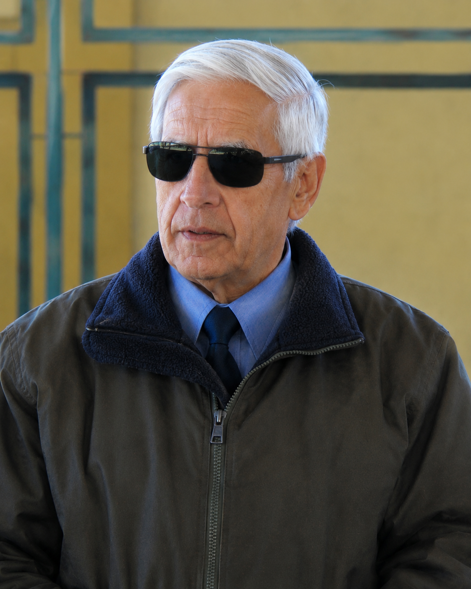

Creación de la Escuela
Comienza la historia educativa del establecimiento en Los Loros.
 Agropecuaria con mención Agrícola
Agropecuaria con mención Agrícola
 Mecánica Industrial con mención Mantenimiento Electromecánico
Mecánica Industrial con mención Mantenimiento Electromecánico
Educación desde NT1 hasta Formación Técnico Profesional
Excelencia Académica 2026–2027
Educando desde 1857, con identidad territorial, inclusión, formación integral y una propuesta Técnico Profesional vinculada al futuro de nuestros estudiantes.
Selecciona tu perfil y te llevamos directamente a los accesos más útiles para ti.
Elige una vez tu perfil. Este dispositivo recordará tus accesos más útiles.
Información reciente de nuestra comunidad educativa.
Cargando últimas noticias...
Presiona el afiche para verlo en tamaño ampliado.

Buscando el comunicado más reciente del establecimiento.
Ponemos a disposición de nuestra comunidad educativa la Cuenta Pública del establecimiento.
Puede leer el documento directamente en esta página o abrirlo completo en una pestaña independiente.
Presione el botón para visualizar la Cuenta Pública.
Ponemos a disposición de madres, padres y apoderados los accesos directos a los sistemas oficiales utilizados para realizar procesos de postulación, matrícula y continuidad de estudiantes.
Seleccione la opción que corresponda al proceso que necesita realizar.
Utilice este sistema para conocer y participar en los procesos de admisión escolar correspondientes a establecimientos educacionales.
Ingresar al Sistema de Admisión EscolarAcceso directo al sistema de registro para apoderados que necesitan solicitar una vacante o realizar el proceso correspondiente.
Ingresar a Anótate en la ListaImportante: Estos accesos corresponden a plataformas externas oficiales. La Escuela de Concentración Los Loros no administra directamente dichos sistemas.
Información importante para nuestra comunidad educativa.
Cargando el último comunicado disponible...
📄 Ver último comunicadoRevisa los comunicados publicados anteriormente.
Cargando comunicados disponibles...
Conoce nuestra identidad, trayectoria y propósito educativo.
La Escuela de Concentración de Los Loros comenzó a funcionar en el año 1857, formando parte de la historia educacional de la localidad y del desarrollo de la educación pública en nuestro país.
Actualmente es un establecimiento educacional de dependencia del Servicio Local de Educación Pública de Atacama, que atiende los niveles de Educación Parvularia, Educación Básica y Educación Media Técnico Profesional.
El establecimiento cuenta con las especialidades de Técnico en Agropecuaria con mención Agrícola y Técnico en Mecánica Industrial, además de una tercera jornada destinada a personas adultas que buscan completar su proceso de educación formal.
La escuela también cuenta con Proyecto de Integración Escolar, apoyando de manera sistemática a estudiantes con necesidades educativas especiales y promoviendo una educación inclusiva.
Ser una comunidad educativa inclusiva, segura y con identidad territorial, que reconozca la diversidad como una fortaleza y cultive el buen trato como base esencial para una sana convivencia, proyectándose como un espacio formativo que garantiza trayectorias educativas de calidad, desde el nivel NT1 hasta la formación técnico-profesional, formando personas íntegras, conscientes de su aporte a la sociedad, preparadas para enfrentar desafíos del mundo laboral o de la educación superior.
Brindar una educación inclusiva, segura y de calidad que acompañe las trayectorias educativas de los estudiantes desde el nivel NT1 hasta la formación técnico profesional, promoviendo el buen trato, el respeto mutuo y la equidad como pilares de la formación integral.
A través de un proyecto educativo centrado en el desarrollo de aprendizajes significativos y competencias para la vida, fomentamos la autonomía, la responsabilidad y el compromiso social, favoreciendo tanto la continuidad de estudios en la educación superior como la inserción en el mundo laboral.
Asimismo, fortalecemos la vinculación con la comunidad y con los espacios productivos del territorio, contribuyendo al desarrollo local y al bienestar colectivo.
Una trayectoria educativa que acompaña a la comunidad de Los Loros desde 1857.
Comienza la historia educativa del establecimiento en Los Loros.
Recibe esta denominación, que mantiene hasta el 30 de junio de 1978.
El profesor Alexis Herrera impulsa la Primera Banda de Guerra Comunal, antecedente histórico de la actual Banda Escolar Alexis Herrera.
Se aplican planes y programas especiales orientados a la formación en oficios.
Se impulsa un proyecto de innovación curricular vinculado a la viticultura y tecnificación del parronal escolar, fortaleciendo la relación entre educación y territorio.
Se incorpora el régimen de Jornada Escolar Completa.
El establecimiento obtiene desempeño destacado en el sistema de evaluación.
Se renueva el Reconocimiento Oficial y se amplía la enseñanza a Educación Media Diurna y Nocturna.
Egresa la primera promoción de Enseñanza Media Técnico Profesional de la mención Agrícola.
Se firma el Convenio de Igualdad de Oportunidades y Excelencia Educativa.
Se aprueban los Planes de Mejoramiento Educativo del establecimiento.
Se reformula el Proyecto Educativo Institucional y se proyecta una nueva especialidad de Mecánica Industrial con mención Mantenimiento Electromecánico.
Se implementa la formación en Mecánica Industrial con mención Mantenimiento Electromecánico y se amplía la Tercera Jornada para población adulta.
El establecimiento obtiene Excelencia Académica.
Entra en funcionamiento Opción 4 Laboral, ampliando la propuesta educativa inclusiva del establecimiento.
Historias de personas cuyo compromiso, vocación y trayectoria forman parte de la memoria de la Escuela de Concentración Los Loros.
Este espacio reconoce a personas especialmente significativas para nuestra memoria institucional. Alexis Herrera mantiene un lugar central por la profundidad y permanencia de su legado en la escuela y en Los Loros.
Profesor Normalista · Director
Educador y gestor comunitario
Profesor Normalista egresado en 1960, desarrolló una extensa labor educativa y comunitaria vinculada a Los Loros. Su trayectoria estuvo estrechamente relacionada con el crecimiento del establecimiento, la atención de estudiantes de sectores rurales y cordilleranos y una educación conectada con las necesidades del territorio.
Su legado también se proyectó hacia la formación cívica y la educación vinculada a la agricultura. Una de sus expresiones más visibles continúa actualmente en la Banda Escolar Alexis Herrera.
Docentes, directivos y funcionarios cuyas trayectorias forman parte de la historia y memoria de nuestra comunidad educativa.

Profesor de Matemáticas · Inspector General
Recordado profesor de Matemáticas que posteriormente asumió responsabilidades de liderazgo como Inspector General.
Romaldo desarrolló parte importante de su trayectoria en la Escuela de Concentración Los Loros. Desde la enseñanza de Matemáticas pasó posteriormente a integrar el cuerpo directivo como Inspector General, acompañando la organización y vida institucional del establecimiento.
Registros de gestión educacional documentan su desempeño en Inspectoría General con resultado Destacado. Su recuerdo permanece en la memoria de generaciones de estudiantes y funcionarios.
Descansa en el Cementerio Parque de Copiapó.
Profesora · Educadora de generaciones de Los Loros
Docente profundamente vinculada a la comunidad de Los Loros y recordada por generaciones de estudiantes y familias.
Su labor educativa forma parte de la memoria de la localidad. Registros históricos de la escuela conservan experiencias pedagógicas desarrolladas por la profesora María Órdenes con estudiantes de Educación Básica.
Su legado trascendió las aulas: como reconocimiento a una profesora que educó a distintas generaciones del sector, la Delegación Municipal de Los Loros recibió posteriormente el nombre María Órdenes Latorre.
Descansa en el cementerio de su querido pueblo de Los Loros.
Director
Formó parte de la conducción del establecimiento y de una etapa significativa de su trayectoria institucional.
Su período de dirección forma parte de la memoria reciente de la Escuela de Concentración Los Loros. Durante su gestión, Elizabeth Maldonado Roche continuó desempeñándose como secretaria del establecimiento.
Trayectoria vinculada al establecimiento
Su nombre forma parte de las personas recordadas por su aporte a la historia de la comunidad educativa.
Esta reseña se mantendrá centrada en los antecedentes institucionales que podamos documentar y complementar progresivamente.
Profesora de Inglés · Primera Jefa de UTP de Enseñanza Media
Cumplió un papel pionero en la organización académica de la Enseñanza Media del establecimiento.
Profesora de Inglés, fue la primera Jefa de la Unidad Técnico-Pedagógica de Enseñanza Media, formando parte del proceso de consolidación de este nivel educativo en la escuela.
Profesora
Más de 40 años de trayectoria docente en la comuna de Tierra Amarilla y vinculada al establecimiento desde aproximadamente 2018.
Su extensa trayectoria como profesora supera las cuatro décadas de servicio en la comuna de Tierra Amarilla. Desde aproximadamente 2018 desarrolla su labor en la Escuela de Concentración Los Loros.
Secretaria del establecimiento
Una trayectoria de continuidad institucional que enlaza distintas etapas de la historia reciente de la escuela.
Continúa desempeñándose actualmente como secretaria de la Escuela de Concentración Los Loros. Ejerció el mismo puesto durante la etapa de Alexis Herrera y posteriormente durante el período de Francisco López Merino, permaneciendo hasta la actualidad como parte de la continuidad administrativa e histórica del establecimiento.
Una tradición escolar que une generaciones de estudiantes desde 1968.
La tradición se remonta a 1968, cuando el profesor Alexis Herrera impulsó la Primera Banda de Guerra Comunal. Con el paso de las décadas, diferentes generaciones de estudiantes han formado parte de esta expresión de identidad, pertenencia y vida escolar.
Actualmente esta tradición continúa bajo el nombre Banda Escolar Alexis Herrera de la Escuela de Concentración Los Loros.
Quienes alguna vez formaron parte de sus filas hoy contribuyen a mantener viva la tradición y a formar nuevas generaciones.
Inspector · Actual líder de la Banda
Exintegrante de la Banda EscolarInspector · Actual líder de la Banda
Exintegrante de la Banda EscolarAyer integrantes. Hoy formadores. Una tradición que se transmite de generación en generación.
Alexis Herrera impulsa la Primera Banda de Guerra Comunal.
Niños, niñas y jóvenes de distintas épocas han dado continuidad a la tradición.
El nombre actual mantiene vivo el vínculo con quien impulsó sus orígenes.
Gonzalo Alanís y Francisco Zepeda, antiguos integrantes, acompañan hoy a las nuevas generaciones.
Más adelante incorporaremos fotografías históricas y actuales para mostrar a las distintas generaciones que han formado parte de esta tradición.
Conoce también la historia de la persona cuyo legado da nombre a nuestra Banda Escolar.
Información sobre nuestros niveles y especialidades.
Revisa la hora de ingreso y salida de cada curso. Para consultar las asignaturas y bloques de cada jornada, utiliza el botón «Ver horario de clases».
Primero selecciona el nivel y luego el curso. Mostraremos solamente la información que necesitas.
Selecciona un nivel para comenzar.
Espacios de aprendizaje, participación y desarrollo de habilidades para nuestros estudiantes.
Los Talleres JEC constituyen espacios formativos que buscan fortalecer los intereses, habilidades y talentos de nuestros estudiantes mediante experiencias prácticas, creativas y vinculadas con el entorno.
Los talleres se desarrollan los días miércoles y jueves, en horario de 13:55 a 15:30 horas.

Profesor: Cristian Cabrera
Horario: Miércoles y jueves de 13:55 a 15:30 horas

Profesor: Ignacio Cortés
Horario: Miércoles y jueves de 13:55 a 15:30 horas

Profesor: Cristian Zúñiga
Horario: Miércoles y jueves de 13:55 a 15:30 horas

Profesor: Leonardo Silva
Horario: Miércoles y jueves de 13:55 a 15:30 horas

Profesora: Susana Mancilla
Horario: Miércoles y jueves de 13:55 a 15:30 horas

Profesor: Simón Varela
Horario: Miércoles y jueves de 13:55 a 15:30 horas
Días: Miércoles y jueves
Horario: 13:55 a 15:30 horas
Los talleres se desarrollan durante la Jornada Escolar Completa (JEC), ofreciendo a nuestros estudiantes distintas alternativas de participación y aprendizaje.
Una oportunidad para continuar y completar tu trayectoria educativa.
Si necesitas completar o regularizar tus estudios de Enseñanza Básica o Enseñanza Media, te invitamos a informarte sobre las alternativas disponibles para continuar tu trayectoria educativa.
Nuestro establecimiento busca brindar oportunidades educativas que permitan a jóvenes y adultos avanzar en su formación y alcanzar nuevas metas personales, académicas y laborales.
Información y orientación para quienes necesitan completar o validar sus estudios de Enseñanza Básica.
Alternativas para completar o validar estudios de Enseñanza Media y continuar avanzando en la trayectoria educativa.
Acércate a nuestro establecimiento para conocer los requisitos, fechas y alternativas disponibles.
Para conocer los requisitos, documentación necesaria, fechas y proceso de inscripción, comunícate directamente con nuestro establecimiento.
Teléfono: +56 52 255 5354
Contactar al establecimientoSelecciona tu perfil para acceder rápidamente a la información y recursos de mayor interés para cada integrante de nuestra comunidad.
Encuentra rápidamente la información más importante según tu rol en la comunidad educativa.
Accesos rápidos a información académica, actividades, comunicaciones y participación estudiantil.
Información y accesos útiles para madres, padres y apoderados de nuestro establecimiento.
Accesos a documentación institucional, protocolos y equipos responsables de la gestión del establecimiento.
Conoce quiénes forman parte de la Escuela de Concentración Los Loros y sus espacios de participación.
Son el centro de nuestra comunidad educativa y protagonistas de sus propios procesos de aprendizaje y desarrollo.
Profesionales que acompañan y orientan los procesos de aprendizaje y formación integral de nuestros estudiantes.
Lidera y orienta el trabajo institucional, promoviendo el cumplimiento de nuestro proyecto educativo.
Contribuyen diariamente al funcionamiento del establecimiento y al bienestar de toda la comunidad educativa.
Participan y colaboran en el proceso educativo de los estudiantes, fortaleciendo el vínculo entre familia y escuela.
Apoyan el desarrollo integral de los estudiantes y contribuyen a responder a sus diversas necesidades.
El Centro de Alumnos constituye un importante espacio de participación y representación estudiantil dentro de nuestra comunidad educativa.
El Centro de Alumnos está conformado por los siguientes estudiantes:
Alejandro Zenteno Castellanos
Miguel Alucema Carrizo
Yoel Domínguez Muiba
Javier Carrizo Latorre
Anthony Alcorta Ramírez
Espacio de participación de las familias que contribuye al fortalecimiento de la relación entre el establecimiento, los estudiantes y sus familias.
Información de la directiva: Próximamente.
Nuestra comunidad promueve el buen trato, el respeto mutuo, la inclusión y la equidad como elementos fundamentales para una convivencia educativa saludable.
Buscamos que cada integrante tenga espacios para participar, aportar y sentirse parte de la Escuela de Concentración Los Loros.
Equipo responsable del liderazgo y gestión del establecimiento.
Directora (S)
Jefa de UTP
Inspector General
Encargada de Convivencia Educativa
Espacio de participación y trabajo colaborativo de los distintos estamentos que forman parte de nuestra comunidad educativa.
El Equipo de Gestión es un espacio de participación, coordinación y trabajo colaborativo que reúne a representantes de los distintos estamentos de la comunidad educativa.
Su propósito es favorecer la participación de los diferentes actores de la comunidad escolar, promoviendo el diálogo, la colaboración y la construcción conjunta de iniciativas que contribuyan al mejoramiento de la vida escolar.
Aportan desde su experiencia pedagógica y profesional, contribuyendo al análisis de las necesidades educativas y al desarrollo de acciones que favorezcan los aprendizajes y la formación integral de los estudiantes.
Representan la voz de las familias y contribuyen con sus opiniones, propuestas y experiencias al fortalecimiento de la relación entre la familia y el establecimiento.
Participan aportando sus opiniones, necesidades e iniciativas, fortaleciendo la representación estudiantil y su participación activa en la comunidad educativa.
Aportan desde sus diferentes funciones y experiencias, contribuyendo al funcionamiento institucional, la convivencia y el bienestar de los integrantes de la comunidad educativa.
Contribuye desde una perspectiva inclusiva al desarrollo de estrategias y acciones que favorezcan la participación, el aprendizaje y el bienestar de los estudiantes.
Representa y canaliza las inquietudes, propuestas y necesidades de los integrantes del estamento correspondiente, favoreciendo la comunicación y participación organizada.
Servicio Local de Educación Pública de Atacama, en su calidad de empleador y sostenedor del establecimiento, participa desde su rol institucional y de apoyo a la gestión educativa.
El trabajo del Equipo de Gestión busca fortalecer la comunicación y colaboración entre los distintos actores de la comunidad educativa, reconociendo que cada estamento tiene un rol importante en la construcción de una escuela inclusiva, participativa y comprometida con su territorio.
La participación de sus integrantes permite recoger diferentes perspectivas y contribuir al desarrollo de acciones orientadas al mejoramiento de los procesos educativos, la convivencia y el bienestar de toda la comunidad escolar.
Documentación institucional del establecimiento.
Esta lista se completa automáticamente con archivos nuevos que se agreguen a la carpeta documentos y que no estén ya enlazados en las categorías anteriores.
Buscando archivos adicionales...
Información preventiva, material de apoyo y documentos relacionados con la seguridad de nuestra comunidad educativa.
Documento institucional que orienta la prevención, preparación y respuesta ante situaciones de emergencia.
Ver PISEProtocolos de actuación del establecimiento educacional.
Encuentra aquí nuestra información de contacto y ubicación.
Calle Ferrocarril 175A
Los Loros
Escuela de Concentración Los Loros
Encuentra nuestro establecimiento en el mapa.
Generaciones de estudiantes han sido parte de una comunidad educativa vinculada a Los Loros, su territorio y su desarrollo.
Guarda la página en tu teléfono y ábrela como una aplicación.
No necesitas descargar un APK ni activar “orígenes desconocidos”. La instalación se realiza desde el navegador.
Busca secciones, horarios, documentos, protocolos y contenidos.
El archivo no está disponible en este momento. Puede estar actualizándose o aún no haber sido publicado.